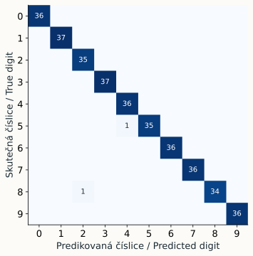

Metodika a vzorový běhTeacher notes and a reference run
Cvičení sleduje rozhodování o metodě a experimentální postup. Srovnání zachovává jediný předem zvolený split a pevné výchozí parametry.The lab develops method selection and experimental reasoning. The comparison keeps one predeclared split and fixed starting parameters.
Plán na 90 minut90-minute plan
| min | AktivitaActivity |
|---|---|
| 0–10 | Třídění úloh a devíti metodSort tasks and nine methods |
| 10–20 | Split a prevence úniku informaceSplit and leakage checks |
| 20–35 | Společné porovnání klasifikátorůShared classifier comparison |
| 35–50 | Příznaky a jednotkyFeatures and units |
| 50–60 | Stromy, forest, boostingTrees, forest, boosting |
| 60–70 | K-means a přejmenování shlukůK-means and label renaming |
| 70–80 | Regrese s jinými příznakyRegression with different features |
| 80–90 | Volba, jeden test, závěrChoice, one final test, conclusion |
Instalaci připravte předem. Slidy mohou běžet jako krátké vstupy mezi úlohami. Ve slabší skupině rozdělte studium algoritmů mezi dvojice a požadujte společné vysvětlení tabulky.Prepare the environment before class. Use the slides as short introductions between tasks. For a less experienced group, assign algorithm families to pairs and ask them to explain the combined comparison.
Skutečně naměřený vzorový běhMeasured reference run
| Model | Train accuracy | Validation accuracy | Validation macro-F1 |
|---|---|---|---|
| Dummy | 10.1 % | 10.3 % | 1.9 % |
| Logistic regression | 99.9 % | 97.2 % | 97.2 % |
| Decision tree | 95.2 % | 83.9 % | 83.8 % |
| Random forest | 100.0 % | 97.5 % | 97.5 % |
| SVM (RBF) | 100.0 % | 99.4 % | 99.4 % |
| k-NN | 99.0 % | 96.4 % | 96.4 % |
| Gaussian naive Bayes | 80.7 % | 74.4 % | 73.1 % |
| Gradient boosting | 99.9 % | 96.4 % | 96.4 % |
Validační volba je svm. Po této volbě dosáhl závěrečný běh na 360 odložených obrázcích accuracy 98.1 % a macro-F1 98.1 %.Validation selected svm. After that selection, the final run on 360 reserved images achieved accuracy 98.1 % and macro-F1 98.1 %.
Prostředí: Python 3.11.0, NumPy 2.4.6, SciPy 1.17.1, scikit-learn 1.9.1. Detaily a indexy splitu jsou v comparison.json; závěrečný výsledek v final.json.Environment: Python 3.11.0, NumPy 2.4.6, SciPy 1.17.1, scikit-learn 1.9.1. Full settings and split indices are in comparison.json; the final result is in final.json.

Vodítka k řešeníAnswer guidance
Příznaky a měřítkoFeatures and scaling
| Features | Dimensions | Validation macro-F1 |
|---|---|---|
| mean | 1 | 9.6 % |
| quadrants | 4 | 57.0 % |
| pixels | 64 | 96.4 % |
Celkový průměr slučuje obrazy s jiným prostorovým uspořádáním. Změna jednoho rozměru o faktor 1 000 mění eukleidovské vzdálenosti. Scaler naučený na tréninku tuto změnu jednotek do značné míry odstraní. Trénování scaleru na validaci by ale porušilo protokol.A global mean merges images with different layouts. Multiplying one coordinate by 1,000 changes Euclidean distances. A scaler learned on training data largely removes that unit change. Learning it from validation would still violate the protocol.
ShlukováníClustering
ARI = 0.4895 před i po přejmenování. Přímé srovnání ID shluků s číslicemi dává raw accuracy 8.6 %, po přejmenování 5.8 %. Tato změna neznamená změnu rozdělení dat.ARI = 0.4895 before and after renaming. Direct comparison of cluster IDs with digit codes gives raw accuracy 8.6 %, then 5.8 % after renaming. The partition itself did not change.
RegreseRegression
linear: MAE 1.729, RMSE 2.059
quadratic_features: MAE 0.534, RMSE 0.651linear: MAE 1.729, RMSE 2.059
quadratic_features: MAE 0.534, RMSE 0.651
Změna x na (x, x²) mění reprezentaci, nikoli základní řešič lineární regrese. Vstupní závislost je v tomto příkladu syntetická a záměrně kvadratická.Changing x into (x, x²) changes the representation, not the underlying linear-regression solver. The input relationship is synthetic and deliberately quadratic.
Přesná vysvětlení metodPrecise method explanations
- Logistická regrese má lineární skóre v daných příznacích. Nelineární strukturu může zpřístupnit vhodná transformace.Logistic regression has linear scores in its chosen features. A suitable transformation can expose nonlinear structure.
- Naive Bayes předpokládá podmíněnou nezávislost příznaků při dané třídě. Sousední pixely jsou obvykle závislé, proto je předpoklad jen aproximací.Naive Bayes assumes conditional feature independence given the class. Adjacent pixels are usually dependent, so this is an approximation.
- k-NN a RBF SVM závisejí na geometrii příznakového prostoru. Random forest ani strom běžně nepotřebují standardizaci stejným způsobem.k-NN and RBF SVM depend on feature-space geometry. Trees and random forests do not usually need standardization in the same way.
- Gradient boosting pro klasifikaci nevysvětlujte jako odečítání číselných kódů tříd. Postup vychází z gradientu zvolené ztráty.For classification, avoid explaining gradient boosting as subtraction of numeric class codes. Its updates follow the chosen loss gradient.
Hodnocení a variantyAssessment and variants
Možné hodnocení z 10 bodů: 2 za správné dělení a preprocessing, 2 za srovnání s baseline a interpretaci chyb, 2 za kontrolovaný pokus s příznaky, 2 za vysvětlení shlukování a regrese, 2 za poctivý závěr s omezeními. Samotná nejvyšší accuracy nemá zvláštní bonus.One possible 10-point rubric: 2 for the split and preprocessing, 2 for baseline comparison and error analysis, 2 for a controlled feature experiment, 2 for explaining clustering and regression, and 2 for an honest conclusion with limitations. The highest accuracy alone receives no special bonus.
Pro 45 minut ponechte úlohy 2–4 a závěrečný závěr. Pro 120 minut přidejte hledání parametrů výhradně uvnitř trénovací části pomocí cross-validation a skupinové dělení vhodné pro vlastní obrazová data.For 45 minutes, keep tasks 2–4 and the final discussion. For 120 minutes, add hyperparameter selection by cross-validation strictly within training and an appropriate group split for your own image data.
Zdroje a rozsah převzetíSources and scope
Podnětem byl příspěvek @codingknowledge zveřejněný 16. 10. 2026. Podařilo se ověřit jeho veřejný popis se seznamem devíti algoritmů a veřejný náhled. Jednotlivé infografiky celé galerie nebyly dostupné. Tento materiál je samostatně vytvořené cvičení k uvedeným tématům, nikoli přepis ani ověření všech původních slajdů.The starting point was a post by @codingknowledge, dated 16 October 2026. Its public description listing nine algorithms and its public preview were verified. The complete gallery’s individual infographics were unavailable. This material is an independently authored exercise on those topics, not a transcription or verification of every original slide.
Zdrojové obrázky Instagramu nejsou součástí balíku. Grafy ukazují skutečný běh přiloženého kódu. Názvy metod, jejich nastavení a metodické výhrady opíráme o níže uvedené primární zdroje.The package does not reproduce Instagram images. Its charts show an actual run of the included code. The following primary sources support method definitions, settings and methodological cautions.